MBIRJAX's default VCD schedule ([0,2,4,6,7]) begins with a granularity-0 iteration: a single subset containing every voxel cylinder, i.e. a full-volume update. That first iteration is the memory high-water mark of the whole reconstruction, and we would like to drop it. The skip 0 candidate ([2,4,6,7]) simply starts at granularity 2 (4 subsets) instead. This page shows head-to-head reconstructions — same data, same regularization, same iteration count; the only difference is the schedule.
Bottom line: on three real datasets at two sharpness settings, default and skip 0 are visually indistinguishable at 15 and 20 iterations, and the quantitative metrics agree (skip 0 ties or very slightly leads in every measured cell). Each schedule's difference from the converged reference is the same — the two difference panels in every figure with a reference are identical — so the schedules follow the same convergence path. Dropping the granularity-0 iteration is safe.
transmission_root weights;
sharpness ∈ {1.0, 2.0} set before auto_set_regularization_params
(auto-regularization then frozen). Both schedules run the plain library solver with
the same seed, so subset partitions match. Volumes were captured at 15, 20, and 30
iterations in one continuous run per variant./depot/bouman/data/mbirjax_metrics/slice_parity/ (recons/,
refs/) for inspection with slice_viewer.Each figure has two view groups — an axial mid-slice (top) and a coronal mid-cut (bottom). Within a group, the upper row shows the reconstructions (reference | default | skip 0) and, directly below the default and skip 0 reconstructions, their difference from the 150-iteration reference (default − reference, skip 0 − reference). So each difference image sits under the reconstruction it belongs to; there is nothing under the reference itself. The difference images use one shared color scale per dataset (the colorbar at the right of each figure), set from the 99th percentile of the whole-volume error so the scale is representative; the bright axial-end flash zones exceed it and may clip.
Between figures, the sharpness setting and iteration count change, labeled by the colored chips in each figure heading (sharpness 1.0 is blue, sharpness 2.0 is orange; the gray chip gives the iteration count). The grayscale recon window is fixed across all figures of a dataset (see Methods). lilly_ds4 at sharpness 2.0 has no reference, so it shows the two reconstructions only.
NRMSE vs reference, percent (lower = better):
| sharpness | variant | 15 it | 20 it | 30 it |
|---|---|---|---|---|
| 1.0 | default | 7.04% | 6.27% | 5.17% |
| 1.0 | skip 0 | 6.87% | 6.15% | 5.09% |
| 2.0 | default | 11.14% | 9.86% | 8.09% |
| 2.0 | skip 0 | 10.85% | 9.65% | 7.95% |
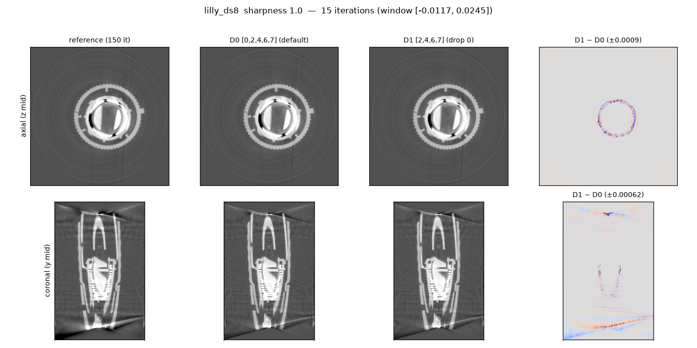
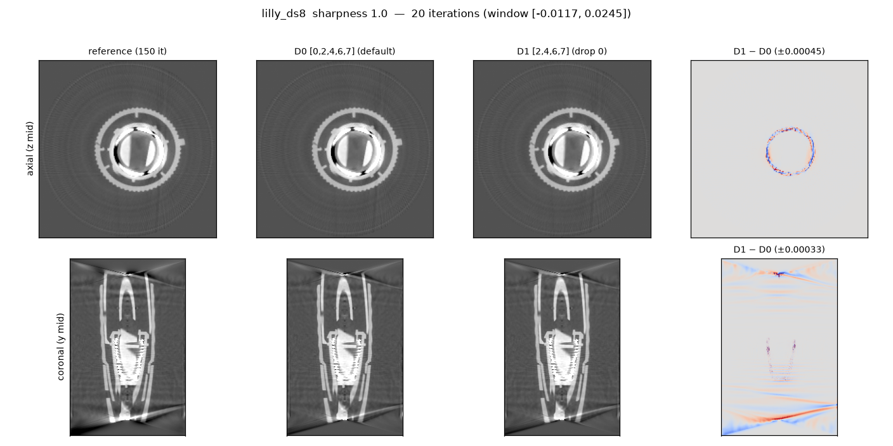
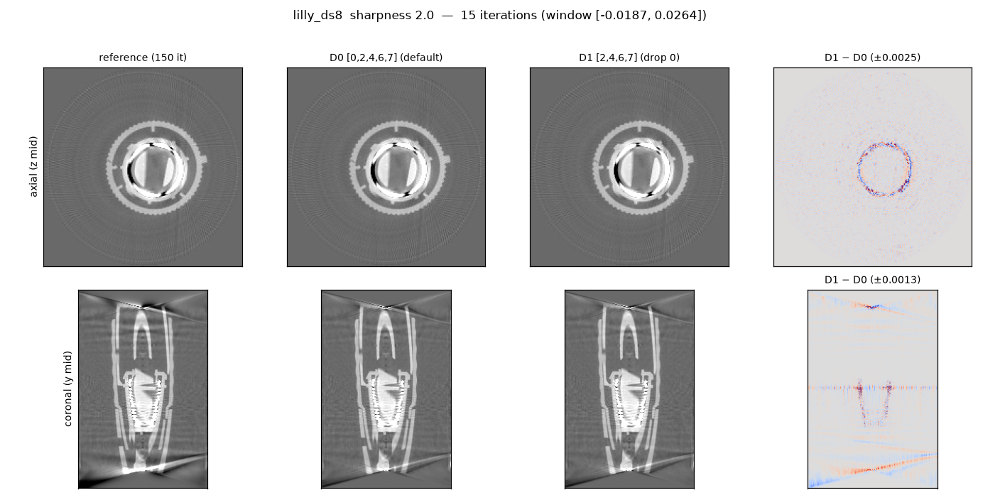
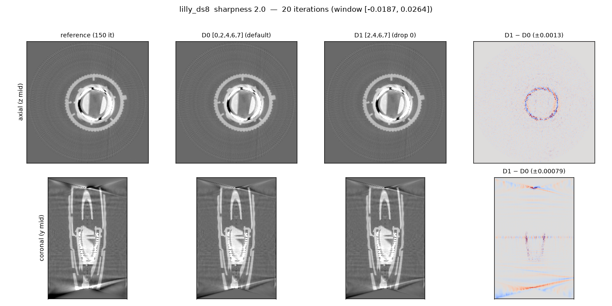
NRMSE vs reference, percent (lower = better):
| sharpness | variant | 15 it | 20 it | 30 it |
|---|---|---|---|---|
| 1.0 | default | 3.11% | 2.72% | 2.17% |
| 1.0 | skip 0 | 3.03% | 2.65% | 2.11% |
| 2.0 | default | 3.20% | 2.81% | 2.27% |
| 2.0 | skip 0 | 3.14% | 2.75% | 2.22% |
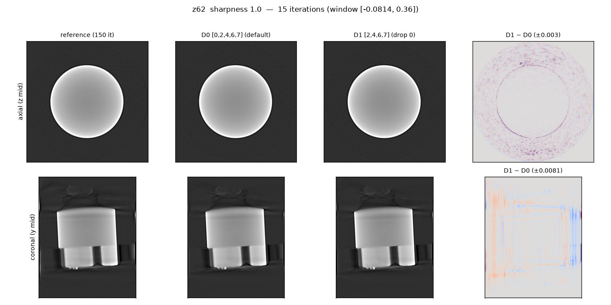
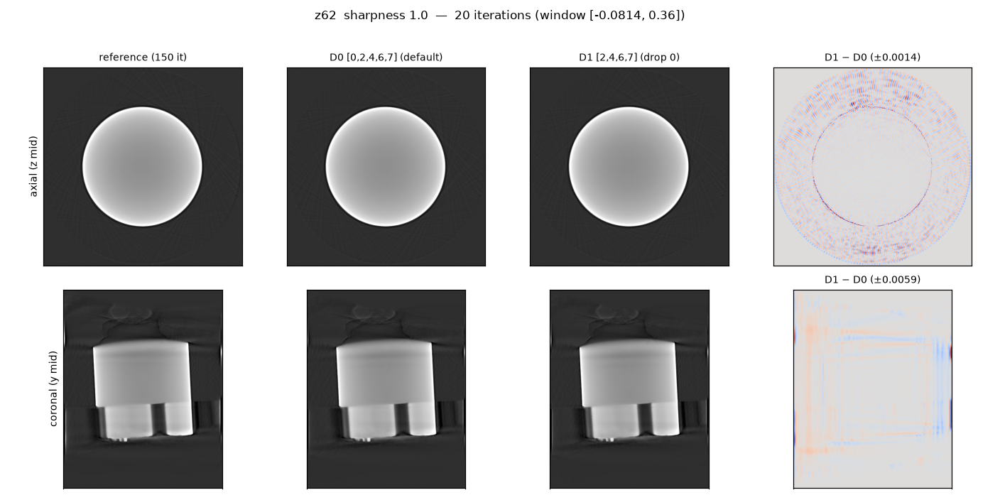
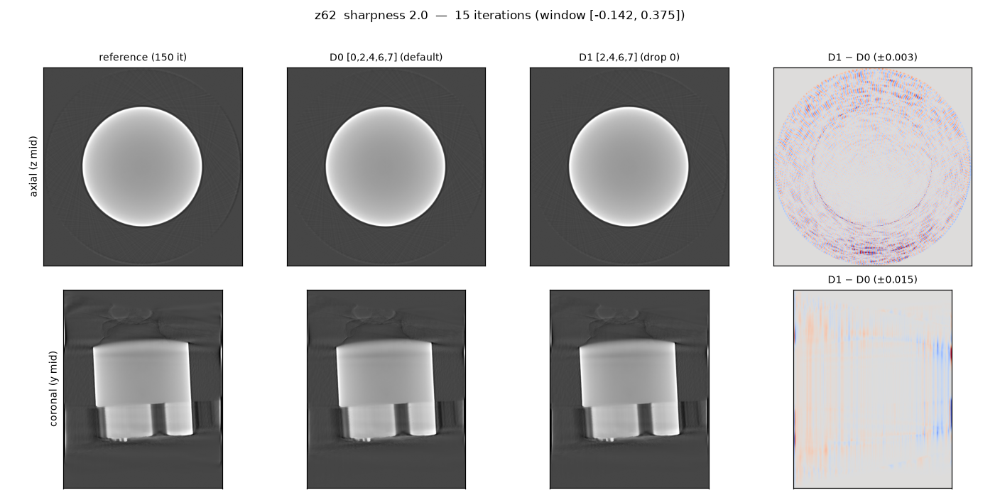
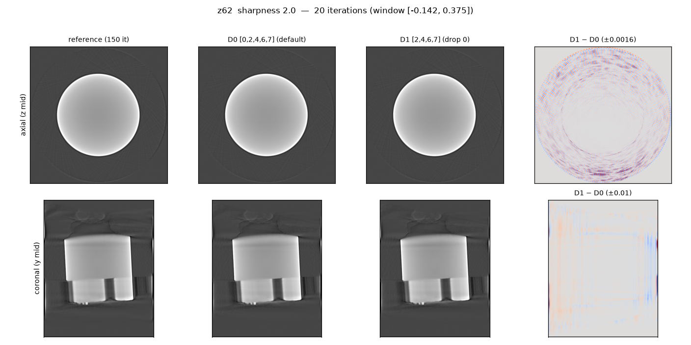
NRMSE vs reference at sharpness 1.0, percent (no reference exists for sharpness 2.0 — image-only there):
| sharpness | variant | 15 it | 20 it | 30 it |
|---|---|---|---|---|
| 1.0 | default | 10.31% | 9.37% | 7.90% |
| 1.0 | skip 0 | 10.11% | 9.21% | 7.78% |
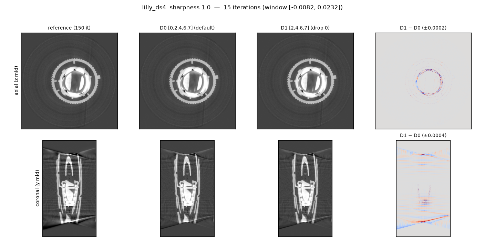
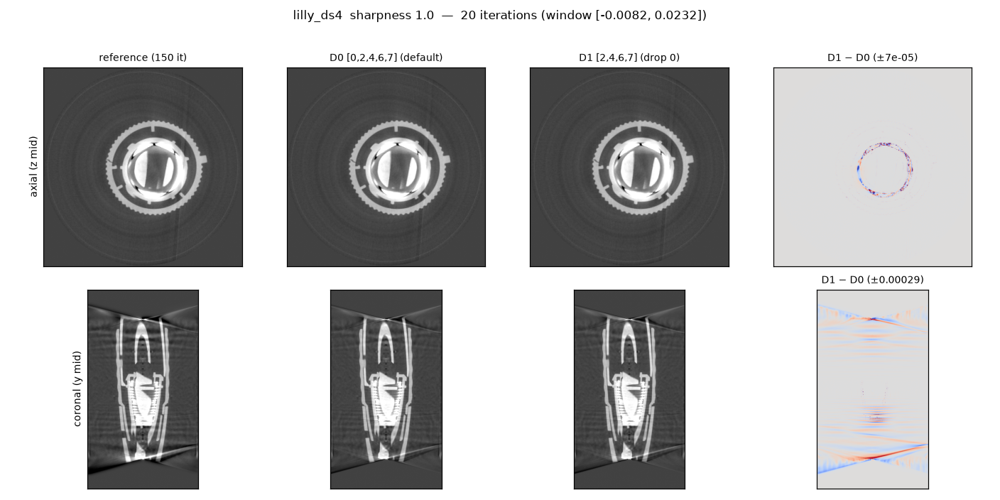
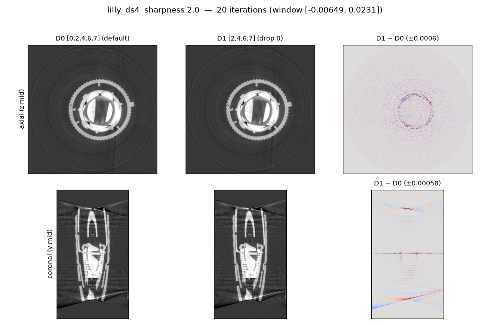
In the direct skip 0 − default difference (third panel, with its own colorbar), a band appears at mid-height, z ≈ 329–331: the cone fan plane (the volume midpoint is 333; the offset matches the detector row offset). The rightmost panel below plots per-slice axial second-difference RMS — the "slice decoupled from its neighbors" noise signature — for both schedules. Both show the same sharp spike at the fan plane, and the two curves essentially coincide: skip 0 is higher by less than 1% at 15 iterations and less than 0.1% at 30, against a ±20% slice-to-slice variation of the same metric. The center-slice effect is a property of the surrogate and the cone geometry, not of the schedule; the difference image highlights that band only because the least-anchored voxels are where two otherwise-equivalent runs diverge most. (This figure deliberately uses a much tighter window than the main figures, to make the noise texture visible.)
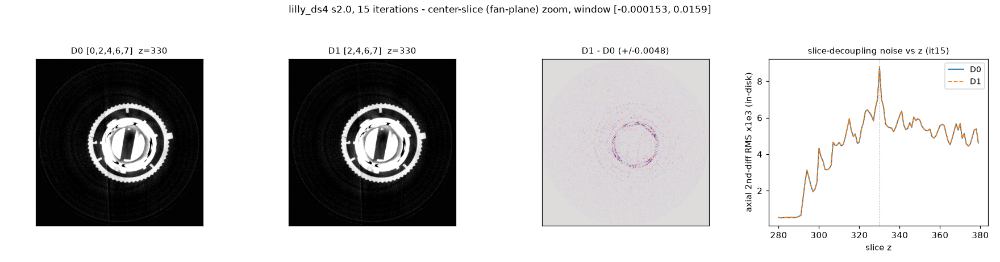
Capture: gautschi job 13481068 (branch greg/gpu_headroom), script
plans/experiments/slice_parity/r2_recon_capture.py; figures by
r2_recon_figs.py. Study context and the full schedule-search results:
plans/slice_parity/slice_parity_plan.md (R2 section). Note: this capture
ran each variant continuously (production-like); the instrumented R2 study restarted
the solver each iteration, and the NRMSE values differ by a few percent (relative)
between the two harnesses — the skip-0 ≤ default ordering held in
all 10 reference-checked cells here.